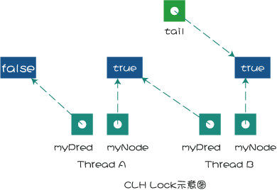
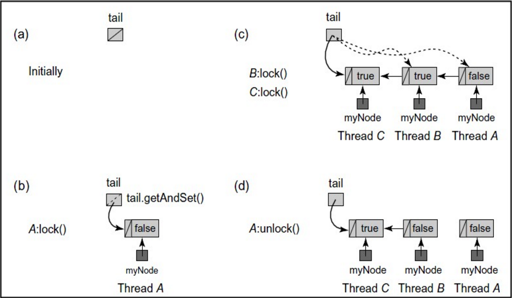

Java自旋锁是什么?
自旋锁:当前线程不停地的在循环体内执行，当循环的条件被其他线程改变时，其他线程才能进入临界区
public class MySpinLock {
private AtomicReference sign = new AtomicReference<>();
public void lock() {
Thread current = Thread.currentThread();
// 参数:预测值,owner
while (!sign.compareAndSet(null, current)) {
}
}
public void unlock() {
Thread current = Thread.currentThread();
// 参数:预测值,owner
sign.compareAndSet(current, null);
}
}
当有第二个线程调用lock操作时由于owner值不为空，导致循环一直被执行，直至第一个线程调用unlock函数将owner设置为null，第二个线程才能进入临界区。
什么时候使用自旋锁 :自旋锁只是将当前线程不停地执行循环体，不进行线程状态的改变，所以响应速度更快。但当线程数不停增加时，性能下降明显，因为每个线程都需要执行，占用CPU时间。如果线程竞争不激烈，并且保持锁的时间段
Java自旋锁-Ticket锁是什么?
public class MyTicketLock {
private AtomicInteger ticketNum = new AtomicInteger();
private AtomicInteger serviceNum = new AtomicInteger();
private static final ThreadLocal<Integer> threadLocal = new ThreadLocal<Integer>();
// 锁定
public void lock() {
int num = ticketNum.getAndIncrement();
threadLocal.set(num);
while (num != serviceNum.get()) {
}
}
// 解锁
public void unlock() {
int num = threadLocal.get();
serviceNum.compareAndSet(num, num + 1);
}
}
Ticket锁主要解决的是访问顺序的问题，主要的问题是在多核cpu上
TicketLock每次都要查询一个serviceNum服务号，影响性能(必须要到主内存读取，并阻止其他cpu修改)
Java自旋锁-CLH队列锁是什么?
public class MyClhLock {
public static class MyClhNode {
private volatile boolean isLocked = true;
}
private volatile MyClhNode tail;
private static final ThreadLocal<MyClhNode> threadLocal = new ThreadLocal<MyClhNode>();
private static final AtomicReferenceFieldUpdater<MyClhLock, MyClhNode> arfu = AtomicReferenceFieldUpdater.newUpdater(MyClhLock.class, MyClhNode.class, "tail");
public void lock() {
MyClhNode node = new MyClhNode();
threadLocal.set(node);
MyClhNode preNode = arfu.getAndSet(this, node);
if (preNode != null) {
while (preNode.isLocked) {
}
preNode = null;
threadLocal.set(node);
}
}
public void unlock() {
MyClhNode node = threadLocal.get();
if (!arfu.compareAndSet(this, node, null)) {
node.isLocked = false;
}
node = null;
}
}

当一个线程需要获取锁时，会创建一个新的Node，并将locked设置为true(表示需要获取锁)
然后线程对tail域调用getAndSet方法，使自己成为队列的尾部，并获取一个指向其前趋的引用myPred
然后该线程就在前趋结点的locked字段上旋转，直到前趋结点释放锁
当一个线程需要释放锁时，将当前结点的locked域设置为false，同时回收前趋结点
如：线程A需要获取锁，其myNode域为true，这时tail指向线程A的结点
然后线程B也加入到线程A后面，tail指向线程B的结点，然后线程A和B都在它的myPred域上旋转
一但它的myPred结点的locked字段变为false，它就可以获取锁并执行，这里线程A的myPred locked域为false，此时线程A获取到了锁
点击查看图文代码
CLH在前趋结点的locked域上自旋等待
CLH队列锁的优点是空间复杂度低(如果有n个线程，l个锁，每个线程每次只获取一个锁，那么需要的存储空间是o=(l+n)，n个线程有n个myNode，l个锁有l个tail)
CLHlock是不停的查询前驱变量， 导致不适合在NUMA 架构下使用，更适合在SMP 或MPP 架构下使用
Java自旋锁-MCS队列锁是什么?
public class MyMcsLock {
public static class MyMcsNode {
volatile MyMcsNode next;
volatile boolean isLocked = true;
}
private volatile MyMcsNode queue;
private static final ThreadLocal threadLocal = new ThreadLocal();
private static final AtomicReferenceFieldUpdater arfu = AtomicReferenceFieldUpdater.newUpdater(MyMcsLock.class, MyMcsNode.class, "queue");
public void lock() {
MyMcsNode node = new MyMcsNode();
threadLocal.set(node);
MyMcsNode preNode = arfu.getAndSet(this, node);
if (preNode != null) {
preNode.next = node;
while (node.isLocked) {
}
}
}
public void unlock() {
MyMcsNode currentNode = threadLocal.get();
if (currentNode.next == null) {
if (arfu.compareAndSet(this, currentNode, null)) {
} else {
while (currentNode.next == null) {
}
}
} else {
currentNode.next.isLocked = false;
currentNode.next = null;
}
}
}

如a所示，队列初始化时没有结点，tail=null
如b所示，线程A想要获取锁，于是将自己置于队尾，由于它是第一个结点，它的locked域为false
如c所示，线程B和C相继加入队列，形成链表：a->next=b, b->next=c，B和C现在没有获取锁，处于等待状态，所以它们的locked域为true，尾指针指向线程C对应的结点
如d所示，线程A释放锁后，顺着它的next指针找到了线程B，并把B的locked域设置为false。这时触发线程B获取锁
点击查看图文代码
MSC在自己的结点的locked域上自旋等待
MSC解决了CLH在NUMA系统架构中获取locked域状态内存过远的问题
Java阻塞锁是什么?什么时候用阻塞锁，什么时候用自旋锁
public class MyZusLock {
public static class MyZusNode {
private volatile Thread cuTread;
}
private volatile MyZusNode tail;
private static final ThreadLocal<MyZusNode> threadLocal = new ThreadLocal<MyZusNode>();
private static final AtomicReferenceFieldUpdater<MyZusLock, MyZusNode> arfu = AtomicReferenceFieldUpdater.newUpdater(MyZusLock.class, MyZusNode.class, "tail");
// 锁定
public void lock() {
MyZusNode node = new MyZusNode();
threadLocal.set(node);
MyZusNode preNode = arfu.getAndSet(this, node);
if (preNode != null) {
preNode.cuTread = Thread.currentThread();
LockSupport.park(this);
preNode = null;
threadLocal.set(node);
}
}
// 解锁
public void unlock() {
MyZusNode node = threadLocal.get();
if (!arfu.compareAndSet(this, node, null)) {
System.out.println("unlock\t" + node.cuTread.getName());
LockSupport.unpark(node.cuTread);
}
node = null;
}
}
点击查看图文代码
阻塞锁，可以说是让线程进入阻塞状态进行等待，当被唤醒 时，可进入线程的准备就绪状态，准备就绪状态的所有线程，通过竞争进入运行状态
常见的阻塞锁：synchronized，ReentrantLock，wait()，notify()，LockSupport.park()/unpart()
线程竞争不激烈的情况下使用自旋锁，竞争激烈的情况下使用阻塞锁
阻塞锁的优势 在于，阻塞的线程不会占用cpu时间， 不会导致 Cpu占用率过高，但进入时间以及恢复时间都要比自旋锁略慢
Java可重入锁是什么?
可重入锁，也叫做递归锁，指的是同一线程外层函数获得锁之后 ，内层递归函数仍然有获取该锁的代码，即允许一个线程多次获取同一个锁(如:ReentrantLock和synchronized都是可重入锁)
可重入锁最大的作用是避免死锁，在释放可重入锁时一个线程获取多少次锁，就必须释放多少次锁否则也会出现死锁
每一次进入和离开synchornized方法或代码块，就是一次完整的锁获取和释放
为什么自旋锁不是可重入的？自旋锁怎样修改为可重入锁？
对于自旋锁来说，若有同一线程两调用lock()，会导致第二次调用lock位置进行自旋，产生了死锁，当unlock的第一次调用时，就已经将锁释放了不可重入
可以采用计数次的方式修改为重入锁
Java读写锁是什么?
分为读锁和写锁
读锁,多个线程可以获取读锁,但必须保证没有一个写线程和请求的写线程
若有一个写线程或请求的写线程就会与读锁互斥因为写锁是一把互斥锁
Java互斥锁是什么?同步和互斥有什么区别？
互斥锁的特点是一次只能一个线程拥有互斥锁，其他线程只有等待
同步是指在互斥的基础上，实现访问者对资源的有序访问
乐观锁和悲观锁的区别是什么？
悲观锁：不同线程同时执行时,只能有一个线程执行,其他的线程在入口处等待,直到锁被释放
乐观锁：不同线程同时执行时,可以同时进入执行,在最后更新数据的时候要检查这些数据是否被其他线程修改了(如:判断版本和未执行时是否相同),没有修改则进行更新,否则放弃本次操作,用于读多的情况
公平锁和非公平锁的区别是什么？
公平锁：公平锁指的是哪个线程先运行，就可以先得到锁
公平锁能够减少"饥饿"发生的概率,吞吐量没有非公平锁好,因为进出都要按照sync队列中有顺序的进行
非公平锁：后续获取锁的线程不顾及sync队列中等待的线程，而是能获取就获取
非公平锁可以保证进入和退出锁的吞吐量
偏向锁,轻量级锁,重量级锁的区别是什么？
偏向锁：在无竞争的情况下把整个同步都消除掉，不进行CAS操作，所以偏向锁可以提高带有同步但无竞争的程序性能
偏向锁适用于只有一个线程访问同步块场景，如果程序中大多数的锁总是被多个不同的线程访问，那么就应该关闭偏向锁来提高程序性能(-XX:-UseBiasedLocking=false关闭偏向锁)
轻量级锁：在无竞争的情况下使用CAS操作去消除同步使用的互斥量,所以竞争的线程不会阻塞,锁占用时间很短(追求响应时间)
重量级锁：所有线程都需要竞争获取锁，同一线程可以重入锁，但锁占用时间较长
怎么理解锁消除,锁粗化,锁膨胀？
锁消除：没有别的线程产生竞争的可能(别的线程没有临界量的引用)，JVM优化时会自动取消这个锁
锁粗化：如:在循环内写了一个synchronized锁(这个其实可以写在循环外)，JVM优化时会自动将锁同步块扩大来减少频繁的加锁和释放锁的操作
锁膨胀：如:没有发生竞争使用时使用的偏向锁，当发生竞争后，锁会膨胀为轻量级锁，当两条或两条以上的线程竞争同一个把锁时，轻量级锁会膨胀成重量级锁
互斥锁和信号量的区别是什么？
互斥锁：互斥锁的特点是一次只能一个线程拥有互斥锁，其他线程只有等待
信号量：容许多个线程同时进入，但有个上限，若一个线程执行完了，其他等待的线程通过竞争进入，但同时进入的线程始终不能超过这个上限值